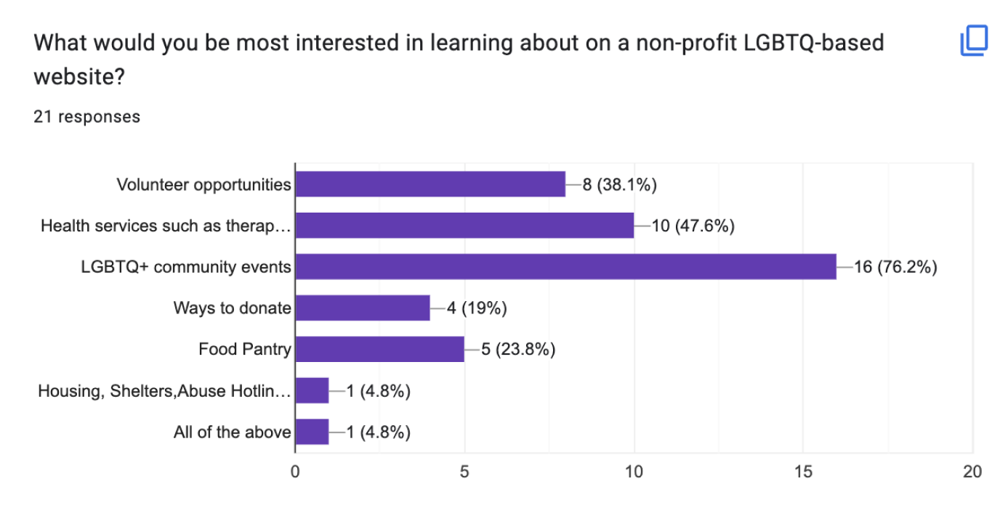
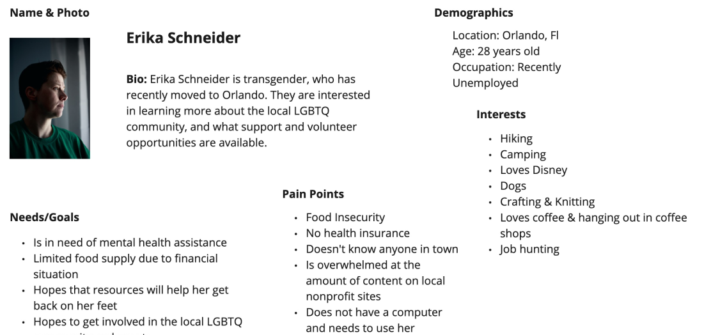
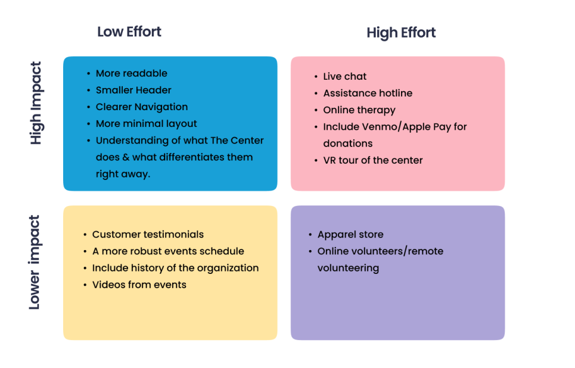

Melissa Taylor
“The Center” LGBTQ+ Nonprofit Redesign
The purpose of the project was to redesign a nonprofit website. We determined this would be a good fit. It was further determined that all the information architecture needed work.
ROLE/TEAM
I collaborated with the team on all aspects, from inception to completion. User research, ideation, definition, wireframing, prototyping, testing and design
TOOLS
Pencil/Paper, Figma, Miro, Adobe XD
CLIENT/DATE/DURATION
Our group created a mobile-first prototype redesign in order for the community to better be able to access The Center’s resource and to understand what The Center does and is.The project took place in a span of 3 weeks, from initial usability testing, through iterating and retesting of the design.
Problem Statement
The Center Orlando is designed to promote and empower the LGBT Community and its allies through information, education, advocacy and support. We have observed that The Center's website is poorly functioning, due to insufficient information architecture and multiple broken links, which is causing people in the LGBTQ+ community who need help to not get the assistance needed.
Goals
We believe identifying user needs and frustrations through our research will support people to get the help they need. By incorporating research analysis with UX design principles and knowledge of The Center, we will ultimately create a cohesive user interface.
Goal 1 Make the site simple and easy to navigate.
Goal 2 Create a site that can grow and evolve with the community.
Goal 3 Identify what the LGBTQ+Community members priorities were with LGBTQ+ nonprofits, what did they need/what were the pain points.
Research & Analysis
We also conducted a competitive analysis. We knew from conducting an initial heuristics evaluation on The Center’s crowded mobile and desktop website that the information architecture, with no clear navigation hierarchy, broken links, spam, and more, needed to be redesigned. We decided to test those findings with users. Starting with 5 users, and 3 of the same scenarios broken into steps for each on mobile and desktop. Usability testing showed us that users were overwhelmed by the interface, and wanted the site organized and simplified.


User Persona
We then surveyed 21 LGBTQ+ community members from 3 Facebook groups. We learned that people wanted to feel a sense of support and belonging to a community and revised our original assumptions on our proto persona to create a user persona, below.

Maslow’s Pyramid
In surveying the community, we gained a key insight for moving forward, shown here:


1.)Assumption: What We
Thought the Community
Would Need from an
LGBTQ+ Nonprofit the Most
2.) Discovery: What we
found out from the survey
answers that the
Community Really Needed
from an LGBTQ+
Ideation
We brainstormed and prioritized how to implement changes synthesized from our research.

Information Architecture Redesign
We were able to map out primary and secondary navigation conducting a card sort on primary and secondary navigation followed by creating a sitemap. We were able to reduce 12 primary navigation labels to just 7, and 2 main navigation bars to a standard 1. Secondary categories were consolidated and that led to less navigation steps users had to take to complete a task. We then created wireframes and low-fi prototypes.

Prototyping & Visual Design
We then created a style guide, using our moodboard, which suggested using primarily black and white, with color and the LGBTQ+ classic rainbow flag colors for emphasis.
Style Guide

Mobile Navigation
Since clear navigation and hierarchy was a big part of navigation we prototyped and tested it here.

Key findings from testing usability prototyping included to increase line spacing, add a “Donate” button, add testimonials, add captions to inclusivity logos for better understanding of what they are for.


See the full working prototypes here
Reflections
More focus on information architecture, further testing (A & B) and incorporating feedback, continue to incorporate inclusivity and community themes into the design, test and iterate and build out more robust features.